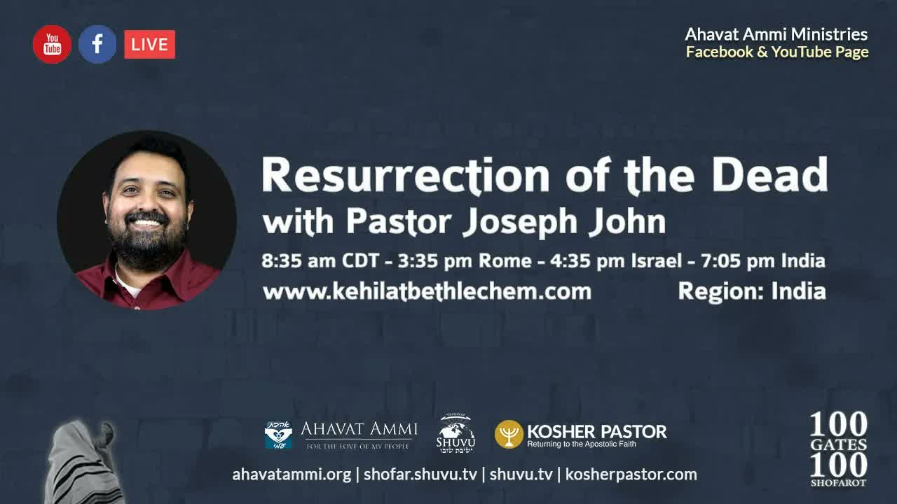

死人復活 Resurrection of the Dead
這是吹角節（Rosh Hashanah）整個系列中最深、最豐富的一篇教導。約翰牧師帶我們從「綁綁以撒」(Akedah) 一路走到「末後的號角」——羊角號的吹響不僅是一個節期的儀式，更是一聲呼召：呼召我們悔改，警告我們審判之日將到，並向我們宣告那從創世以來就埋藏在妥拉裡的盼望——死人復活(Techiyat HaMetim)。 This is the deepest and richest teaching in the whole High Holy Days set. Pastor Joseph John walks us from the binding of Isaac (the Akedah) all the way to the last shofar — the blast of the ram's horn is not merely a festival ritual but a summons: a call to repent, a warning that the day of judgment is coming, and a proclamation of the hope buried in the Torah since creation — the resurrection of the dead (Techiyat HaMetim).
羅什哈沙拿（Rosh Hashanah，吹角節）有許多名字，其中一個是「Yom HaZikaron」——「記念日」。約翰牧師問：這一天我們究竟要記念什麼？答案藏在號角聲裡。聖賢說，吹角是要叫神「記念」綁綁以撒(Akedat Yitzchak)；而希伯來書告訴我們，以撒的故事「超越了獻祭」——它是一個預表，預表那將要來的死人復活(תְּחִיַּת הַמֵּתִים，Techiyat HaMetim)。換句話說，這一聲角響，把記念、悔改、審判與復活全部串在一起。 Rosh Hashanah carries many names — one of them is Yom HaZikaron, “the Day of Remembrance.” Pastor Joseph John asks: what exactly are we to remember on this day? The answer is hidden in the sound of the shofar. The sages say we blow the ram's horn so that God will “remember” the binding of Isaac (Akedat Yitzchak); and the book of Hebrews tells us Isaac's story reaches “beyond sacrifice” — it is a pattern, a foretelling of the coming resurrection of the dead (תְּחִיַּת הַמֵּתִים, Techiyat HaMetim). One blast of the horn binds together remembrance, repentance, judgment, and resurrection.
一、記念日 ── 我們究竟要記念什麼？I. The Day of Remembrance — What Are We to Remember?
約翰牧師從伯利恆會堂（Kehillat Bethlehem）向印度、亞洲與亞太地區問安，向全世界宣告耶書亞是「萬王之王、萬主之主」。他祝願每一位都被記在生命冊上，新的一年甜美而豐盛。但他立刻把目光轉向當下：世界各處都有逼迫、黑暗、屬靈爭戰。這不是偶然——這是末世的預兆，是給彌賽亞身體的記號：余民當興起，當在黑暗中發光。黑暗越深，光當越亮。 Pastor Joseph John brings greetings from Kehillat Bethlehem to India, Asia, and the Asia-Pacific, proclaiming Yeshua as “King of kings and Lord of lords.” He prays that each of us would be inscribed in the Book of Life for a sweet and fruitful year. But he turns at once to the present moment: everywhere there is persecution, darkness, spiritual war. This is no accident — it is a prophetic sign for the last days, a sign to the body of Mashiach: the remnant must arise and shine in the darkness. The deeper the darkness, the brighter we must burn.
他用大衛 (David HaMelech) 面對歌利亞的故事作比喻：許多人說「他太大了，我們打不過」；少年大衛卻說「他這麼大，我絕不會射偏」。同一件事——巨大的威脅——對信心的人卻成了機會。所以這個節期不是叫我們躲藏，而是叫我們興起、發光、擴展神的國度。 He illustrates with David (David HaMelech) facing Goliath: many said, “He is too big — we cannot defeat him.” The young David said, “He is so big — I cannot miss.” The very same thing — an overwhelming threat — becomes, to the person of faith, an opportunity. So this season is not a summons to hide but to arise, shine, and expand the kingdom of God.
羅什哈沙拿的另一個名字是 Yom HaZikaron（記念日），又稱 Teruah Zikron（記念那聲音）。聖賢說，這聲音叫人想起綁綁以撒，因為它代表死人復活。於是約翰牧師提出全篇的核心問題：我們為什麼要吹羊角號？我們要記念的，到底是什麼？ Another name for Rosh Hashanah is Yom HaZikaron (the Day of Remembrance), also called Teruah Zikron — “the remembrance of the sound.” The sages say this sound recalls the binding of Isaac, because it represents the resurrection of the dead. And so Pastor John frames the whole teaching's central question: why do we blow the ram's horn? What is it, exactly, that we are to remember?
二、綁綁以撒 ── 超越獻祭的預表II. The Binding of Isaac — A Pattern Beyond Sacrifice
聖賢這樣解釋吹角：「至聖者，當受稱頌的那位說：在我面前吹羊角，好叫我為你們的緣故記念綁綁以撒——亞伯拉罕之子的捆綁——並把這事算在你們身上，如同你們甘願把自己當作祭物獻給我。」這是約翰牧師強調的第一層：羊角號叫神「記念」亞伯拉罕的順服與以撒的甘願。 The sages explain the blast this way: “The Holy One, blessed be He, says: Blow a ram's horn before Me, so that I will remember in your favour the Akedah — the binding of Isaac, the son of Abraham — and credit the act to you, as though you bound yourself to Me willingly to offer yourself as a sacrifice.” This is the first layer Pastor John stresses: the shofar calls God to “remember” Abraham's obedience and Isaac's willingness.
但這裡面有超越獻祭的東西。希伯來書 11:19 告訴我們：「他以為神還能叫人從死裡復活；他也彷彿從死中得回他的兒子來。」亞伯拉罕「彷彿從死中得回以撒」——這意味著以撒是一個預表 (type / pattern)，預表那將要來的一位。許多猶太註釋甚至辯論：以撒是否真的死了，神再叫他復活？有人說是，有人說神只是供應了公羊。但希伯來書的作者把這事看得很清楚——以撒的故事預先講論了一個關於死人復活的模式。 But there is something here beyond sacrifice. Hebrews 11:19 tells us: “Abraham considered that God was able to raise him even from the dead — from which, figuratively speaking, he did receive him back.” Abraham received Isaac back “as from the dead” — meaning Isaac is a type, a pattern of the One yet to come. Some Jewish commentaries even debate whether Isaac actually died and was raised, or whether God simply supplied the ram. But the writer of Hebrews sees it clearly — Isaac's story foretells a pattern about the resurrection of the dead.
那隻被神供應的公羊，象徵著彌賽亞 (Mashiach)。神不會讓亞伯拉罕白白上山——祂早已預備了「替代」，那替代就是供應，供應帶來拯救。以撒身上「彷彿從死中得回」的模式，正是彌賽亞「死而復活」之模式的影子。 The ram God supplied is a symbol of the Messiah (Mashiach). God did not send Abraham up the mountain for nothing — He had already prepared a substitute, and that substitute was provision, and provision brings salvation. The pattern of Isaac “received back as from the dead” is the very shadow of Messiah's own death and resurrection.
三、用 Kavanah 聆聽 ── 號角是審判之日的呼召III. Listening with Kavanah — The Shofar as a Call to Judgment
在羅什哈沙拿聽見號角時，人被要求帶著完全的 Kavanah（כַּוָּנָה，「專注、意向」）來聽。Kavanah 是一種心思的狀態。約翰牧師對比：人禱告時可以只是「口頭功夫」，嘴唇動而心不到——這樣的禱告毫無意義；但若我們把每一個字都內化到靈魂深處，那就是 Kavanah，那就是真正的意向。 When the shofar sounds on Rosh Hashanah, one is required to listen with full Kavanah (כַּוָּנָה, “intention, focus”). Kavanah is a state of mind, a posture of the heart. Pastor John contrasts it: a person can pray with mere “lip service,” the lips moving but the heart absent — and such prayer has no meaning; but if we internalise every word in the depths of the soul, that is Kavanah, that is true intention.
帶著 Kavanah 聆聽，意味著我們意識到：號角提醒我們那將要來的審判之日——Yom HaDin（יוֹם הַדִּין，「審判之日」）。聖賢說，至聖者那日坐在寶座上，像牧人查驗每一隻經過窄門的羊，決定哪一隻存活、哪一隻死亡。同樣，全人類——無論列國是否察覺——都在羅什哈沙拿像羊一樣經過神面前。我們一切的行為都被記錄，神每年都察看。 To listen with Kavanah is to be aware that the shofar reminds us of the coming day of judgment — Yom HaDin (יוֹם הַדִּין, “the day of judgment”). The sages say the Holy One sits on the throne on that day like a shepherd inspecting each sheep as it passes through the narrow gate, deciding which lives and which dies. In the same way all humanity — whether the nations are aware of it or not — passes before God on Rosh Hashanah like sheep. All our deeds are recorded, and God reviews them every year.
約翰牧師提出一個牧養的洞見：有些人生命中經歷種種事，卻怎麼也想不通「為什麼會這樣、為什麼這樣發生」。我們需要明白——我們生命中沒有一件事是偶然的。一切都由神的「神聖護理」(divine providence) 管理。人承不承認、信不信，都不改變這個事實。神是王，祂監管一切。所以號角是一聲嚴肅的呼召，提醒我們那無人能逃避的審判。 Pastor John offers a pastoral insight: some people go through things in life and cannot figure out “why is this happening, and why like this?” We need to realise — nothing in our life is a coincidence. Everything is governed by divine providence. Whether a person acknowledges it or believes it does not change the fact. God is King, and He oversees everything. So the shofar is a solemn call, reminding us of a judgment no one can escape.
「因為他們忿怒的大日到了，誰能站得住呢？」——啟示錄 6:17 “For the great day of their wrath has come, and who is able to stand?”— Revelation 6:17
你可以躲、可以跑，但你逃不掉。所以我們要帶著真正的 Kavanah 聆聽號角——因為吹角是要提醒我們趁還來得及，當悔改、當行 Teshuvah（תְּשׁוּבָה，「回轉」）。如此行，神在祂的憐憫中，必在審判之日 Yom HaDin 救我們脫離祂的忿怒。 You can hide, you can run, but you cannot escape. So we listen to the shofar with true Kavanah — because the blowing is to remind us to repent, to do Teshuvah (תְּשׁוּבָה, “turning, return”) before it is too late. And in doing so, God in His mercy will save us from His wrath on the day of judgment, on Yom HaDin.
四、復活 ── 賜給義人的供應IV. Resurrection — The Provision for the Righteous
既然號角連於綁綁以撒，而綁綁以撒（按希伯來書 11）關乎死人復活，因為它是彌賽亞的影子——這意味著「記念日」Yom HaZikaron 是在向我們述說神為我們所預備的供應，這供應通向救恩。神不會無故吩咐亞伯拉罕做那事；那裡有預備好的供應，供應通向救恩，救恩帶來拯救。正如神為以撒供應了公羊，那公羊象徵彌賽亞。 Since the shofar is bound to the binding of Isaac, and the Akedah (per Hebrews 11) deals with the resurrection of the dead because it is a shadow of the Messiah — this means the Day of Remembrance, Yom HaZikaron, is telling us about the provision God has made for us, a provision that leads to salvation. God would not have commanded Abraham to do what he did unless there was a provision set up; the provision leads to salvation, and salvation brings deliverance. Just as God provided Isaac with a ram, that ram is a symbol of the Messiah.
約翰牧師指出歷史的一個側面：按理說，以色列在第一世紀本該從地圖上被抹去——當時有無端的仇恨、各樣的荒謬。但神預備了一隻「公羊」，那公羊就是彌賽亞。對那些不信靠這公羊的人，審判臨到；許多拉比與聖賢知道神的憐憫已不再停留在那時的以色列。那些不肯行 Teshuvah 的、悖逆的，面對苦澀的死亡；但耶書亞的門徒卻被保守，脫離了那忿怒。 Pastor John points to a side of history: by all accounts Israel should have been erased from the map in the first century — there was baseless hatred, every kind of nonsense. But God prepared a “ram,” and that ram was the Messiah. For those who did not trust the ram, judgment came; many of the rabbis and sages knew God's mercy was no longer resting on Israel of that hour. Those who would not do Teshuvah, the rebellious, met a bitter death; but Yeshua's disciples were preserved from that wrath.
所以復活是一個供應——賜給那些在彌賽亞裡持守信心、與祂同行、在信實中正直生活的人。如果我們是配得的，「恐懼戰兢做成得救的工夫」（腓 2:12），我們就必在彌賽亞來臨時，脫離那將到的忿怒。 So the resurrection is a provision — for those who maintain faith in the Messiah, walk uprightly with Him, and live in faithfulness. If we are worthy, “working out our salvation with fear and trembling” (Phil 2:12), we will be saved from the coming wrath when Messiah comes.
五、末後的號角 ── 在眨眼之間V. The Last Shofar — In the Twinkling of an Eye
拉比掃羅——使徒保羅——在哥林多前書 15:51-52 教導我們這復活。他說：「הִנֵּה（Hineh，看哪），我如今把一件奧祕的事告訴你們：我們不是都要睡覺（死亡之睡），乃是都要改變。」這是何等奇妙！然後第 52 節接著說：「就在一剎那(rega)，眨眼之間，末次號角吹響的時候——因號角要響，死人要復活成為不朽壞的，我們也要改變。」 Rabbi Shaul — the Apostle Paul — teaches us about this resurrection in 1 Corinthians 15:51–52. He says: “Hineh” (הִנֵּה, “Behold”), I tell you a mystery: we will not all sleep the sleep of the dead, but we will all be changed. And then verse 52 continues: in a rega — “in a moment, in the twinkling of an eye, at the last shofar blast — for the shofar will sound, and the dead will be raised imperishable, and we will be changed.”
當死人復活發生時，罪與死再也沒有權勢。從我們在這世界出生的那一刻起，我們的身體就走在一個生物時鐘上——倒數，倒數到我們死亡的那一天。沒有人能逃避它。而在這時鐘的框架裡，我們又與「罪的傾向」掙扎——這罪欲奪取我們的身體（保羅在羅馬書 7:5 講論這事）。於是死亡的果子產生得更快，罪加速了那時鐘。 When the resurrection of the dead occurs, sin and death no longer have power. From the moment we are born into this world our bodies are on a biological clock — a countdown to the day of our death. None of us can escape it. And within that framework we wrestle with the inclination of sin, which seeks to take over the body (Shaul speaks of this in Romans 7:5). So the fruit of death is produced faster — sin speeds up the clock.
保羅在羅馬書 6:23 也暗示這一點：「罪的工價乃是死。」罪加速生物時鐘，使死亡提前到來。所以拉比掃羅在羅馬書 6:12 勸我們：「不要容罪在你們必死的身上作王。」耶書亞在約翰福音 5（醫好病人後）也警告他所醫治的人「不要再犯罪，恐怕有更嚴重的事臨到你」——那「更嚴重的事」就是死亡。罪加速死亡的過程。 Paul alludes to this also in Romans 6:23 — “the wages of sin is death.” Sin speeds up the biological clock, causing death to arrive prematurely. So Rabbi Shaul advises us in Romans 6:12: “Do not let sin reign in your mortal bodies.” Yeshua, in John 5, warns the man He healed “to sin no more, lest something more tragic befall you” — and that more tragic thing is death. Sin speeds up the dying process.
復活是神賜給持守妥拉、不犯罪的義人的供應。大衛王在詩篇 1:1-2 暗示了這點：那些持守妥拉、忠於神的，神保守他們脫離毀滅。當妥拉——神的訓誨——在我們裡面時，裡面就沒有違背妥拉的空間；而違背妥拉產生死亡。所以這供應究竟是什麼？是一個新的、得榮耀的身體。罪與死無法存在於這身體之中。哥林多前書 15 講論「不朽壞的身體」——罪與死無法滲入，因為我們在復活時所得的身體不是為這世代的，乃是為神的國度，在那裡罪與死絕不能存在。 The resurrection is God's provision to the righteous who keep His Torah and sin not. King David alludes to this in Psalm 1:1–2: those who stay faithful to the Torah, God preserves from destruction. When the Torah — God's instruction — is within us, there is no room within us to violate it; and violating the Torah produces death. So what is this provision? A new, glorified body. Sin and death cannot exist in it. 1 Corinthians 15 speaks of imperishable bodies — no sin or death can permeate them, because the body we receive at resurrection is not for this age but for the kingdom of God, where sin and death can never exist.
六、三本書 ── 義人、惡人、與中間人 (Beinonim)VI. The Three Books — Righteous, Wicked, and the In-Between (Beinonim)
聖賢說，死人復活會發生在羅什哈沙拿——我們不知是哪一年，但知道是在這個時節。掃羅與聖賢同思路：在羅什哈沙拿，有三本書被打開。第一本是給惡人的，第二本是給義人的，第三本是給中間人的——稱為 Beinonim（בֵּינוֹנִים，「中間者、不偏不倚者」）。義人被寫上並印記得生，惡人被寫上並印記入死，中間人則從羅什哈沙拿被留到贖罪日 (Yom Kippur)。 The sages say the resurrection of the dead will happen on Rosh Hashanah — we do not know which year, but we know it is around this season. Shaul shares the sages' line of thought: on Rosh Hashanah, three books are opened. The first is for the wicked, the second for the righteous, and the third for the in-between — known as the Beinonim (בֵּינוֹנִים, “the intermediate ones”). The righteous are inscribed and sealed for life, the wicked inscribed and sealed for death, and the middle ones are left from Rosh Hashanah until Yom Kippur.
聖賢問：這教導的經文根據在哪裡？他們引詩篇 69:28：「願他們從生命冊上被塗抹，不得記錄在義人之中。」「冊」指惡人的書；「生命冊」指義人的書；「不得記錄在義人之中」指中間人。約翰牧師強調：這正是聖賢與拉比理解聖經的方法——而使徒保羅用的也是同一種方法。當我們讀妥拉時，表面上看不見「字面的天堂、字面的地獄、字面的彌賽亞」；但用猶太、拉比式的詮釋學去讀，我們就在妥拉與塔納赫 (Tanakh) 中看見了 Olam HaBa（עוֹלָם הַבָּא，「將來的世界」）、看見死亡、看見復活、看見彌賽亞。它全都在妥拉裡。 The sages asked: what is the scriptural foundation for this teaching? They answered by quoting Psalm 69:28 — “Let them be blotted out of the book of the living, and let them not be inscribed among the righteous.” “The book” refers to the book of the wicked; “the living” to the book of the righteous; “not inscribed among the righteous” to the middle people. Pastor John stresses: this is the very method by which the sages and rabbis read Scripture — and the Apostle Paul uses the same method. When we read the Torah, on the surface we see no “literal heaven, literal hell, literal Messiah”; but through Jewish, rabbinic hermeneutics we see Olam HaBa (עוֹלָם הַבָּא, “the world to come”), we see death, we see resurrection, we see the Messiah. It is all in the Torah.
「你們不要把這事看作希奇。時候要到，凡在墳墓裡的，都要聽見人子的聲音（就是聽見號角），就出來：行善的復活得生，作惡的復活定罪。」——約翰福音 5:28-29 “Do not marvel at this, for the hour is coming when all who are in the graves will hear the voice of the Son of Man (they will hear the shofar) and come out — those who have done good to the resurrection of life, and those who have done evil to the resurrection of judgment.”— John 5:28-29
這建基於但以理書 12:2：「睡在塵埃中的，必有多人復醒；其中有得永生的，有受羞辱永遠被憎惡的。」「永遠被憎惡」即毀滅、地獄之火 (Gehinnom)。聖賢從耶書亞的話與但以理書中得到的真理是：義人與惡人都有復活——一個復活得生，一個復活定罪。 This is grounded in Daniel 12:2: “And many of those who sleep in the dust of the earth shall awake, some to everlasting life, and some to shame and everlasting contempt.” “Everlasting contempt” means destruction, the fires of hell (Gehinnom). What the sages drew from Yeshua's words and from Daniel is this: there is a resurrection for both the righteous and the wicked — one to life, one to judgment.
七、中間人是誰？ ── 經過火的精煉VII. Who Are the Middle People? — Refined Through Fire
那麼，誰是這「第三群、中間的人」？彌賽亞說，將有綿羊與山羊的分別、麥子與稗子的分別（馬太福音 25:31-46）。聖賢解釋：惡人被寫上並印記入永死——直接下地獄；義人被印記入永生（但以理書 12:2 所暗示）。但中間人呢？聖賢說，他們會「經過」地獄——這裡有一個重要的希伯來文字遊戲：惡人「進入」地獄（命運已定），中間人卻是「經過」地獄（一場精煉、一場大患難）。 So who are these “third, middle people”? The Messiah says there will be a separation of sheep and goats, wheat and tares (Matthew 25:31–46). The sages explain: the wicked are inscribed and sealed for eternal death — they go straight to hell; the righteous are sealed for eternal life (as alluded in Daniel 12:2). But the middle ones? The sages say they will “go through” hell — and here lies an important Hebrew play on words: the wicked “go into” hell (their fate is sealed), while the middle ones “go through” hell (a refining, a tribulation).
「我要使這三分之一經火，熬煉他們，如熬煉銀子；試煉他們，如試煉金子。他們必求告我的名，我必應允他們。我要說：『這是我的子民。』他們也要說：『耶和華是我們的神。』」——撒迦利亞書 13:9 “I will bring this third part through the fire, and refine them as silver is refined, and test them as gold is tested. They will call on My name, and I will answer them. I will say, ‘This is My people,’ and they will say, ‘The LORD is my God.’”— Zechariah 13:9
這「三分之一」指的正是中間人 (Beinonim)——那些需要精煉、需要潔淨的人。約翰牧師特別澄清：聖賢並不是在教導天主教所說的「煉獄」(purgatory) 那種暫時狀態。天主教其實是從聖賢那裡取了這概念，卻誤解了希伯來文中的字詞之分——惡人「進入」地獄（命運已封），第三群「經過」地獄（指一場患難），因為義人早已被印記得生。想想聖經中的眾先知、列祖、列母，所有死於對神之信心的人——他們的信心早已被印記；而那些不悔改的、不肯確認自己信心的，他們的命運也照樣被封定。 This “third part” refers precisely to the Beinonim — those who require refinement and cleansing. Pastor John is careful to clarify: the sages are not teaching the Catholic notion of a temporary “purgatory.” The Catholics actually got the concept from the sages but misunderstood the Hebrew wordplay — the wicked “go into” hell (their fate sealed), the third group “goes through” hell (indicating a tribulation), because the righteous are already sealed for life. Think of the prophets, the patriarchs, the matriarchs — all who died in faith in God: their faith is already sealed; while those who were unrepentant, who never confirmed their faith, are sealed as well.
所以——中間人，就是我們。我們是仍活在這世上的人，被夾在兩個極端（已印記得生的義人、已印記入死的惡人）之間的縫隙裡。因此我們仍活在這世界，我們的命運尚未被決定，直到我們交出最後的氣息為止。 And so — the middle people are us. We are those still alive in this world, caught in the gap between the two extremes (the righteous already sealed for life, the wicked already sealed for death). Therefore we still live in this world, and our fate is not yet determined — until we give up our final breath.
八、雅各的患難 ── 中間人必經之路VIII. Jacob's Trouble — The Road the Middle People Must Walk
撒迦利亞的話又指向耶利米書 30:7：「哀哉！那日為大，無日可比；這是雅各遭難的時候，但他必被救出來。」希伯來原文是「雅各的掙扎 (struggle)」——這「雅各的患難」正是聖賢用來指那第三群中間人的。許多人誤解了這點。耶書亞自己在馬太福音 24:22 也暗指雅各的患難：「若不減少那日子，凡有血氣的，總沒有一個得救的；只是為選民（即以色列），那日子必減少了。」 Zechariah's words point back to Jeremiah 30:7: “Alas! That day is great, so that none is like it; it is even the time of Jacob's trouble — but he shall be saved out of it.” The Hebrew reads “the time of Jacob's struggle” — and this “Jacob's trouble” is exactly what the sages mean by the third, middle group. Many misunderstand this. Yeshua Himself alludes to Jacob's trouble in Matthew 24:22: “Unless those days were shortened, no flesh would be saved; but for the elect's sake (that is, Israel) those days will be shortened.”
注意耶利米書沒有說雅各的患難「以滅亡告終」——它說「但我必拯救他們」。意思是：他們必須忍耐到底，必須經過火，正如聖賢引撒迦利亞書 13 所說：他們如金子經火、如銀子被煉。我們這些身體裡有缺陷的人——裡面有罪、有死——為要配得義人的復活，我們必須經過火。所以我們這中間人，要經過大患難、雅各的患難，但我們不會被毀滅。 Notice Jeremiah does not say Jacob's trouble “meets its end” — it says “yet I will save them.” Meaning: they must endure, they must go through fire, just as the sages say by quoting Zechariah 13: they go through fire as gold and silver are refined. We who have flaws in these bodies — with sin and death in them — must, in order to be worthy of the resurrection of the righteous, go through the fire. So we, the middle people, pass through the great tribulation, Jacob's trouble, but we will not be destroyed.
約翰牧師發出懇切的呼籲：在那一刻，你我不在天堂，也不在地獄；我們是夾在兩個世界之間的中間人，只有神知道我們的心。那些按神旨意死於信心的，已被印記為義，沒有商量餘地；那些離棄信心、退後、死在罪中的，他們的命運同樣被封定。所以——「若你正走在通往地獄的路上，求神使你的心與神和好。」 Pastor John makes an earnest appeal: in that moment, you and I are neither in heaven nor in hell; we are the middle people caught between two worlds, and only God knows our hearts. Those who died in faith according to God's will are sealed for righteousness, no negotiations; those who fell away, backslid, and died in their sins — their fate is sealed as well. So — “if you are on the path of hell, get your heart right with Hashem.”
九、三聲號角與「被提」 ── 一個猶太的觀念IX. Three Shofar Blasts and the “Rapture” — A Jewish Idea
聖賢說有三次明確的號角吹響。第一聲號角連於五旬節 (Shavuot)——妥拉被賜下的日子（出埃及記 19）；那時神在西奈山把自己許配給以色列，山上響起極大的號角聲，以色列人受不住，求摩西獨自與神說話。末次號角（保羅在哥林多前書所提的）連於羅什哈沙拿（利未記 23:24；民數記 29:1），它在聖經的脈絡中宣告那最後、最大的果子收割——象徵死人復活。而大號角(Shofar Gadol，שׁוֹפָר גָּדוֹל) 代表贖罪日 (Yom Kippur，利未記 25:9)，關乎彌賽亞的來臨與審判之日，那時義人與惡人都被帶到神的寶座前受判決。 The sages say there are three distinct shofar blasts. The first shofar is connected to Shavuot (Pentecost) — the day the Torah was given (Exodus 19); there God betrothed Himself to Israel, the shofar sounded loud on the mountain, and the children of Israel could not bear it and asked Moses to speak to God alone. The last shofar (the one Paul speaks of in 1 Corinthians) is connected to Rosh Hashanah (Leviticus 23:24; Numbers 29:1), and in its biblical context it announces the final and largest harvest of fruits — symbolic of the resurrection of the dead. And the Great Shofar (Shofar Gadol, שׁוֹפָר גָּדוֹל) represents Yom Kippur (Leviticus 25:9), dealing with the coming of Mashiach and the day of judgment, when both righteous and wicked are brought before the throne of God to be sentenced.
拉比掃羅在帖撒羅尼迦前書 4:15-17 講論這號角：「我們現在照主的話告訴你們」——他的啟示是建基於已經寫好的神的話。保羅是在擴展早已在妥拉中的真理。「我們這活著的人（中間人，那些活在地上、還沒有被撇下的人）……斷不能在那已經睡了的人之先。」那些已死的義人在墳墓裡，在死人復活的次序上先得復活，然後才輪到我們。 Rabbi Shaul speaks of this shofar in 1 Thessalonians 4:15–17: “We say to you by the written word of the Lord” — his revelation rests on what was already in the word. Paul is expanding a truth already in the Torah. “We who are alive (the middle people, those alive on the earth and not left behind) … will in no way precede those who have fallen asleep.” The righteous dead, in their graves, have seniority in the resurrection — they rise first, and then it is our turn.
「因為主必親自從天降臨，有呼叫的聲音，和天使長的聲音，又有神的號角吹響；那在彌賽亞裡死了的人必先復活。以後我們這活著還存留的人，必和他們一同被提到雲裡，在空中與主相遇；這樣，我們就要和主永遠同在。」——帖撒羅尼迦前書 4:16-17 “For the Lord Himself will descend from heaven with a cry of command, with the voice of the prince angel, and with the shofar of God; and the dead in Messiah will rise first. Then we who are alive, who are left, will be caught up together with them in the clouds to meet the Master in the air — and so we will always be with the Lord.”— 1 Thessalonians 4:16-17
約翰牧師指出：那些「被搶上去」(snatched up) 的人，就是配得脫離神忿怒的人——有人稱之為「被提」(rapture)。但他鄭重澄清：「被提」其實就是死人復活的那一日，它是一個猶太的觀念，由身為拉比學者的掃羅在第一世紀引入。它不是一個與猶太根源無關的西方發明，而是深深紮根於羅什哈沙拿、末次號角、與雅各患難的應許之中。 Pastor John notes: those who are “snatched up” are the ones worthy to be saved from God's wrath — some call it the “rapture.” But he is emphatic: the “rapture” is really the day of the resurrection of the dead, and it is a Jewish idea, introduced in the first century by Shaul the rabbinic scholar. It is not a Western invention cut off from its Jewish roots, but something rooted deeply in Rosh Hashanah, the last shofar, and the promise concerning Jacob's trouble.
十、隱藏之日、君王的歸回、與新耶路撒冷X. The Hidden Day, the King's Return, and the New Jerusalem
羅什哈沙拿為什麼落在提斯利月 (Tishri)？經文根據在哪？約翰牧師指向詩篇 81:3：「當在月朔並月望——我們過節的日期吹角。」這一天是「隱藏之日 / 隱密之日」——月亮隱藏不見。在希伯來曆中，唯獨羅什哈沙拿這一天，月亮被視為「隱藏的」。這正是為什麼兩天被算為一整天：若第一天看不見新月，就延到第二天。聖賢說，這「隱藏之日」要教導一個更大的功課——關於那無人知道的將來之日。 Why does Rosh Hashanah fall in Tishri? Where is the proof text? Pastor John points to Psalm 81:3: “Sound the shofar at the new moon, when the moon is hidden, on our festival day.” This day is the “hidden, concealed day” — the moon is hidden from view. In the Hebrew calendar, only on Rosh Hashanah is the moon considered “hidden.” This is exactly why two days are counted as one whole day: if the new moon is not seen on the first day, it carries to the second. The sages say this “hidden day” teaches a greater lesson — about the coming day that no one knows.
一段米大示（早於耶書亞的時代）記載：天使問神，為什麼以色列在羅什哈沙拿不向神唱讚美（Hallel）？因為連天使也不知道羅什哈沙拿何時臨到。耶書亞正是這樣說：「那日子、那時辰，沒有人知道，連天上的使者也不知道，惟獨父知道。」（馬太福音 24:36）這就是為什麼羅什哈沙拿被連於審判之日、連於十天後的贖罪日——也是為什麼在所有不反映審判的「月朔詩篇」中，唯獨詩篇 81:3 反映了審判。 A midrash (predating Yeshua's day) records the angels asking God why Israel does not sing praise (Hallel) on Rosh Hashanah. Because even the angels did not know when Rosh Hashanah falls. Yeshua says exactly this: “Of that day and hour no one knows, not even the angels of heaven, but the Father alone” (Matthew 24:36). This is why Rosh Hashanah is bound to the day of judgment, to Yom Kippur ten days later — and why, of all the “new-moon Psalms” that do not reflect judgment, Psalm 81:3 alone does.
耶書亞在馬太福音 24:30-31 描繪祂的再來：人子帶著能力與大榮耀駕雲降臨，地上萬族都要哀哭；祂要差遣使者，用號角的大聲，將祂的選民從四方、從天這邊到天那邊招聚了來。約翰牧師指出一個細節：保羅說「末次號角」，耶書亞說「大聲的號角」——這是兩種不同的號角。「大號角」(Shofar Gadol) 指贖罪日，是實際審判的日子；而連於雅各患難、連於死人復活、由那位「君王天使」(Sar HaPanim) 之聲所引介的，是另一聲號角。 In Matthew 24:30–31 Yeshua portrays His return: the Son of Man comes on the clouds with power and great glory, and all the tribes of the earth mourn; He sends His angels with a great sound of the shofar to gather His elect from the four winds, from one end of heaven to the other. Pastor John flags a detail: Paul speaks of the “last shofar,” while Yeshua speaks of the “great sound” of the shofar — these are two different shofars. The “Great Shofar” (Shofar Gadol) refers to Yom Kippur, the day of actual judgment; while the one tied to Jacob's trouble, to the resurrection of the dead, and heralded by the voice of the “prince angel” (Sar HaPanim) is another blast.
耶書亞在這裡回指妥拉——申命記 30:3-4：神應許要把以色列從被擄之地領回、施憐憫，甚至「從天這邊招聚你回來」。所以以色列的復興，繫於彌賽亞的歸回，而這也關乎羅什哈沙拿。以西結書 37 的枯骨之谷異象也是如此——當猶太人 1948 年從奧斯威辛與死亡集中營走出、歸回故土時，他們真的像「行走的枯骨」站在以色列地上。若這在較淺的層面已是真的，在更大的層面更是如此。 Here Yeshua points back to the Torah — Deuteronomy 30:3–4: God promises to bring Israel back from exile, to have compassion, even to “gather you back from the ends of the heavens.” So the restoration of Israel is bound to the return of the Messiah, and this too concerns Rosh Hashanah. Ezekiel 37's valley of dry bones is the same — when the Jewish people came out of Auschwitz and the death camps and returned to the land in 1948, they literally looked like dead bones walking in the land of Israel. If it was true in a lesser sense, it is true in a far greater one.
當君王彌賽亞在祂歸回的日子來臨時，死人復活與審判將同時發生。那些活在地上、配得脫離忿怒的人，要被搶上去；那些不配的，則不被搶上。義人的信心已被印記為義，惡人的信心已被印記為惡——當神的忿怒傾倒、潔淨這地時，配得的人要進入新耶路撒冷的同在。 When King Messiah comes on the day of His return, the resurrection of the dead and judgment will happen simultaneously. Those alive on the earth who are worthy to be saved from the wrath will be snatched away; those not worthy will not. The faith of the righteous is sealed for righteousness, the faith of the wicked sealed for wickedness — and as God's wrath is poured out and purges the earth, the worthy enter the presence of the New Jerusalem.
「我又看見聖城新耶路撒冷由神那裡從天而降，預備好了，就如新婦妝飾整齊，等候丈夫。」——啟示錄 21:2 “I saw the holy city, the New Jerusalem, coming down out of heaven from God, prepared as a bride adorned for her husband.”— Revelation 21:2
當末次號角吹響，我們將從這必死的身體轉變為不朽的身體；當神的忿怒在那日傾倒、潔淨惡人時，我們要進入祂的同在、進入新耶路撒冷。然後，一個新的人類將要展開——沒有男女之分（指那超越今世限制的新身分）、沒有罪、沒有死的新人類。神要把以色列從被擄之地全然招聚回來；在「大號角」之下，完全的修復 (Tikkun，תִּקּוּן) 要成就。 When the last shofar sounds, we will be changed from these mortal bodies into immortal ones; and as God's wrath is poured out on that day, purging the wicked, we will enter His presence, into the New Jerusalem. Then a new humanity will begin — no male or female (in the sense of an identity beyond this age's limits), no sin, no death. God will gather all Israel back from the exiles; and under the “Great Shofar,” full restoration (Tikkun, תִּקּוּן) will take place.
約翰牧師以一句懇切的話收束：所以對我們而言，這一天不該只是一場宗教聚會——它該像我們呼吸的氣息一樣，是生與死的大事。若我們把一切放在上下文中看——保羅的話、耶書亞的話、甚至聖賢的話——這一天，弟兄姊妹們，真正是死人復活之日。願我們都配得、都得著這日；當彌賽亞來臨、號角吹響，願我們不被撇下。Am Yisrael Chai。 Pastor John closes with an earnest word: so for us, this day should not be a mere religious meeting — it should be a matter of life and death, as near to us as the breath we breathe. If we take everything in context — Paul's words, Yeshua's words, even the sages' words — this day, friends, is truly the day of the resurrection of the dead. May we be worthy and merit this day; when the Messiah comes and the shofar blasts, may we not be left behind. Am Yisrael Chai.
結語 ── 末次號角吹響之時Closing — When the Last Shofar Sounds
「就在一剎那，眨眼之間，末次號角吹響的時候——死人要復活成為不朽壞的，我們也要改變。預備好你自己，因為這一天無人知道何時臨到。當號角吹響，願你不在地獄、不被撇下，乃在那被搶上去、與彌賽亞永遠同在的人中間。」 “In a moment, in the twinkling of an eye, at the last shofar blast — the dead will be raised imperishable, and we will be changed. Prepare yourself, for no one knows the day. And when the shofar sounds, may you not be in hell, nor left behind, but among those snatched up to be with the Messiah forever.”